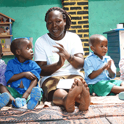

Bildungsprojekte

Unser Kindergarten in Guliro
Der Kindergarten in Guliro ist das Herzstück unserer Bildungsprojekte. Täglich betreuen wir über 120 Kinder im Alter von 3 bis 6 Jahren und bieten ihnen nicht nur liebevolle Betreuung, sondern auch warme Mahlzeiten und altersgerechte Förderung.
Was wir bieten
- Tägliche Betreuung für über 120 Kinder
- Warme Mahlzeiten - oft die einzige richtige Mahlzeit des Tages
- Frühkindliche Bildung mit altersgerechten Lernmaterialien
- Soziale Kompetenzen durch Spiel und Gemeinschaft
- Gesundheitsvorsorge und Hygieneerziehung
Erwachsenenbildung
Menschen aus- und weiterzubilden hat sich der Verein Mehr Mut als Lebensaufgabe gestellt. Dabei wird eng mit der Bildungsbehörde der Gegend zusammengearbeitet, welche den Verein mit Lernmaterialien unterstützt.
Aktuelle Bildungsprojekte
- Englischkurse für Jugendliche und Erwachsene
- Nähen und Handwerk zur beruflichen Qualifikation
- Alphabetisierung speziell für Frauen
- Schulgarten für Ernährungssicherheit